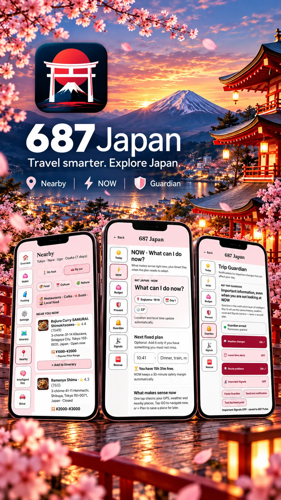

687 Japan brings the 687 travel system into a destination where timing, transport, language and local context can change quickly. Plan the trip, understand what is around you, adapt the day and keep important travel information together.

Stations, neighborhoods, weather, opening times, distances and language can turn a simple plan into many small decisions. 687 Japan keeps the most important travel layers in one place so you can spend less time switching tools and more time moving through the trip.
Build the itinerary, organize destinations and keep budget and practical trip information close before departure.
Nearby, translation and navigation help bridge the gap between the place you planned and the place you are standing in.
NOW, Intelligent Day, Prevent, Guardian and Signals help the plan respond when timing, weather or the route changes.
A Japan trip can combine international flights, domestic flights, long-distance trains, local transfers, hotels, timed attractions and several cities. 687 Japan keeps these pieces connected so Tokyo, Kyoto, Osaka and additional stops stay part of one understandable plan.
Today, NOW, Budget, Prevent, Guardian, Signals and Rescue form one practical daily travel layer.
Keep relevant changes and travel context visible while moving through a destination with many connections and time-sensitive decisions.
Use conditions such as rain, heat and visibility in the context of the day, not as a separate forecast you have to interpret yourself.
Focus on what still fits now, based on current place, time and the rest of your travel day.
Discover useful places around the current location and move from discovery to a practical next step.
Keep trip spending visible and use available local price context where it can improve a decision.
Move from 687 to supported map services when you are ready to go, without losing the rest of the travel context.
Practical language help stays close to the rest of the trip, where it is useful during real travel situations.
Keep important context easier to notice when the trip involves several moving parts.
Practical travel-help tools stay close when something goes wrong or you need quick assistance.
687 Japan is designed for repeated small decisions throughout the day: where to go next, what is nearby, whether the weather changes the plan, how much time remains and which navigation option to use.
687 will be available through the official app stores. Store links will be added here as soon as each release is publicly available.
687 Japan is designed to connect the major travel decisions before and during the trip — international flights, domestic connections, trains, accommodation, additional cities, priority bookings and car travel — with the itinerary you use every day.
Keep arrival and departure planning connected to the trip schedule instead of treating the main flight as a separate task.
Add internal air connections when they are useful and keep airport time and transfers visible inside the itinerary.
Plan transfers between cities and understand how transport time changes the realistic shape of the day.
Keep accommodation choices linked to the places, transport and timing around each part of the itinerary.
Put time-sensitive bookings, tours and entries at the center of the plan so other activities can fit around them.
Keep must-see places and priority experiences visible so the plan protects what matters most to you.
Extend the same trip to additional cities without losing the structure, budget and travel context already created.
Use driving when it makes sense and connect it with stops, Nearby, navigation and the rest of the travel plan.